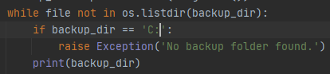

מוסיף שאלה בשרשור הזה כי היא רלוונטית - אני מנסה להקפיץ חריגה במקרה שלא קיימת תיקיית wit לגבות לתוכה. ניסיתי ליצור תנאי בלולאה שעולה במעלה התיקיות - “אם התיקייה שאתה נמצא בה היא :C, תקפיץ חריגה” אבל אני עדיין נתקע בלולאה אינסופית. למישהו יש רעיונות?
קודם כל - לא בהכרח ה’מחיצה’ שבה נמצאים היא C.
תנסה לדבאג בעזרת print-ים ולראות למה הלולאה שלך לא עוצרת
כבר עשיתי את זה, התוכנה כן מגיעה ל C, בודקת את תנאי החריגה, לא עוצרת, ומדפיסה את :C באופן אינסופי.
היא לא מדפיסה במקרה:
C:\ או C:/?
סליחה \:C באופן אינסופי. ניסיתי גם לשים \:C בתנאי (עם סלש נוסף כי צריך אותו) ועדיין קרה אותו דבר.
תנסה לשנות את התנאי, כך שהוא יוריד את הסלאשים האפשריים ל-backup_dir
ובכל מקרה, אני לא בטוח שנהוג להעלות חריגה כתנאי עצירה מלולאה, זה שקול (אני חושב) ל-break
לא הבנתי. מאיפה הסלשים אמורים לרדת?
אני מוסיף סיבוך לרגע, אבל יכול להיות שאם תתייחס אליו זה גם יפתור לך את הבעיה.
אל תניחו שיש C: במחשב, או /. זה לא טוב כי זה מניח דברים שלא בהכרח קיימים בכל מחשב.
באופן כללי, הרבה חניכים עשו הרבה הנחות שגויות בתרגיל הזה:
- ש־/ מסמן הפרדה בין תיקיות בכל מערכות ההפעלה.
- ש־
C:הוא התיקייה העליונה ביותר. - שהם מקבלים נתיב יחסי ולא אבסולוטי.
נסו להימנע מזה, אני לא מקבל תרגילים עם הנחות. 
בחלק גדול מהפעמים ההכללה, ולא להיתלות בהנחות האלו, יכולים לחסוך לכם באגים.
בהצלחה
מבלי לכתוב את התשובה במפורש - הבנתי שאני צריך לבדוק אם הנתיב שלי “חזר הביתה”